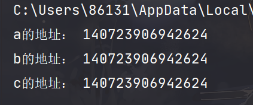

Python概述：python是一种简单易学、功能强大的编程语言，它继承了传统编译语言的强大性和通用性，具有高层次的数据结构，支持面向对象的编程方法。
Python标识符的命名规则如下：
Python语句中有一些基本规则和特殊字符：
#：表示其后的字符为python语句的注释。在python中，三引号也可以作为注释符。
31#这是一行注释2'''这也是一行注释'''3"""这还是一行注释"""\n ：换行符
\ ：续行符，继续上一行
21print("This line is tooooooooo \2long")关于续行符有两种例外情况：
一个语句在含有小括号、中括号、花括号时，可以多行书写：
31print("this is a multiline",2 "example")3#此时的缩进将失去语法上的意义。三引号内包含的字符串也可以跨行书写：
21print('''hi there is a long message for you2that goes over multiple lines!''')； ：将两条语句放在一行中。python语句末尾不同于C语言，它不需要加分号，但是如果多条语句放在一行就需要用分号将不同语句分开。
11a = 10; b = 20; print(a + b)：： 将复合语句的头和体分开。
像if， for， while，def和class之类的复合语句，首行均以关健字开始，并以冒号结束，该行之后的一行或多行代码就构成了代码块（组），即语句块。
61if condition_1:2 statements_13elif condition_2:4 statements_25else:6 statements_3代码组用缩进的方式体现，不同的缩进深度分隔不同的代码块。
一个代码组内的各行代码，左边必须有数目相同的空格或数目相同的制表符，而不能以一个制表符代替多个空格！
随着缩进深度的增加，代码块的层次也在逐步加深，未缩进的代码块处于最高层次，称作脚本的main部分。
Python文件以模块的形式组织。
每个python文件均可视为一个模块。模块可以包含直接运行的代码块，类定义，函数定义，以及他们的组合。
python3中有六种标准的数据类型，他们是：
python3支持四种数值类型，他们是：
使用内建函数type（）来查询变量所指的对象的类型。
python的数值运算包括加、减、乘、除四则运算以及取余、乘方运算等。
201>>> 5 + 4 #加法，注意这里及以下的运算均是命令行环境下演示的。2934>>> 4.3 - 2 #减法52.367>>> 3 * 7 #乘法821910>>>2 / 4 #除法，得到浮点数110.51213>>> 6 // 4 #除法，得到整数（相当于C语言中的整数除法）1411516>>> 17 % 3 #取余1721819>>> 2 ** 5 #乘方2032
Python中的变量无需声明，这一点与C语言不同，我们无需关心变量本身的数据类型，python有自己的判断机制。但是变量在使用前必须被赋值，变量赋值以后，该变量才会被创建。
变量没有类型，所谓的类型是指内存中对象的类型。也就是说，一个变量可以被赋值为各种类型的值。
python允许同时为多个变量赋值，例如： a = b = c = 1。但这个语句只创建了一个整形对象4，三个变量被分配到相同的内存空间上。
对上面的现象做一个解释：
首先引用熊猫大哥大博客中的一段话：“
那么看似牛X的Python变量是如何可以切换类型的呢，其实真正牛的不是Python变量，而是Python语言的解释执行器。
举个例子如下，解释器可以这么运作。首先在内存中地址为XXXX的地方存了一个变量1，然后运行到a=1时，发现整数1要赋值给变量a，所以解释器就知道了啊哈变量a是整型，然后a其实保存的是地址XXXX。
然后运行到a=0.1，解释执行器在内存中地址为YYYY的地方存了0.1，然后知道了啊哈a是浮点类型，然后a保存的地址变为了YYYY。”
所以，python中的变量的地址是在不断变化的，他不是固定的，随着对象的地址的变化而变化。它不像C语言中的变量那样有一个固定的地址值。
41a = b = c = 12print("a的地址：", id(a))3print("b的地址：", id(b))4print("c的地址：", id(c))
python可以为多个对象指定多个变量。例如： a, b, c = 1, 2, "python"。这也为变量交换数值提供了一种新的解决方法： a, b = b, a。
变量赋值时，只会记住最后一次赋值的值。